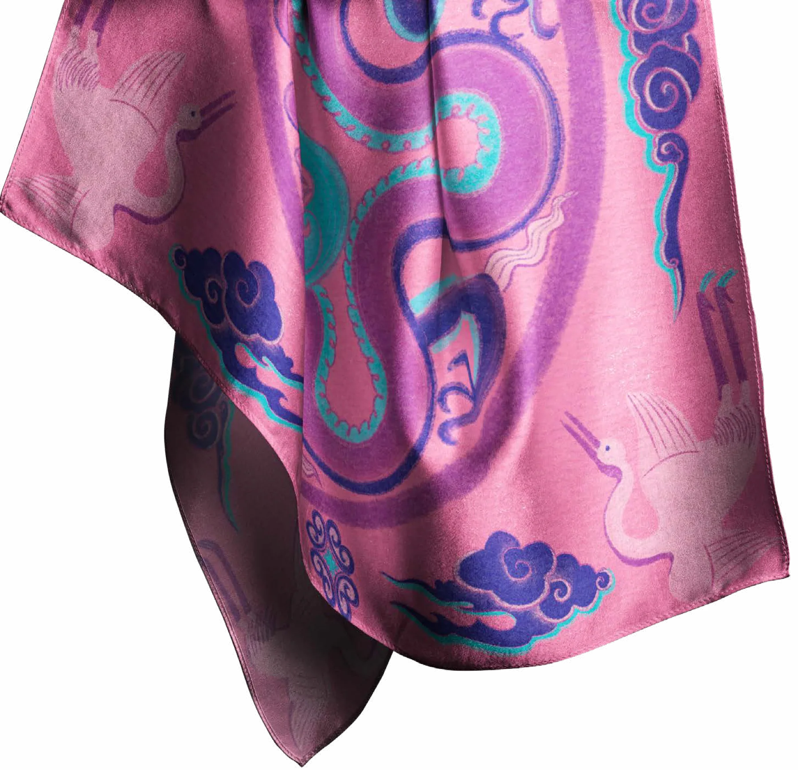
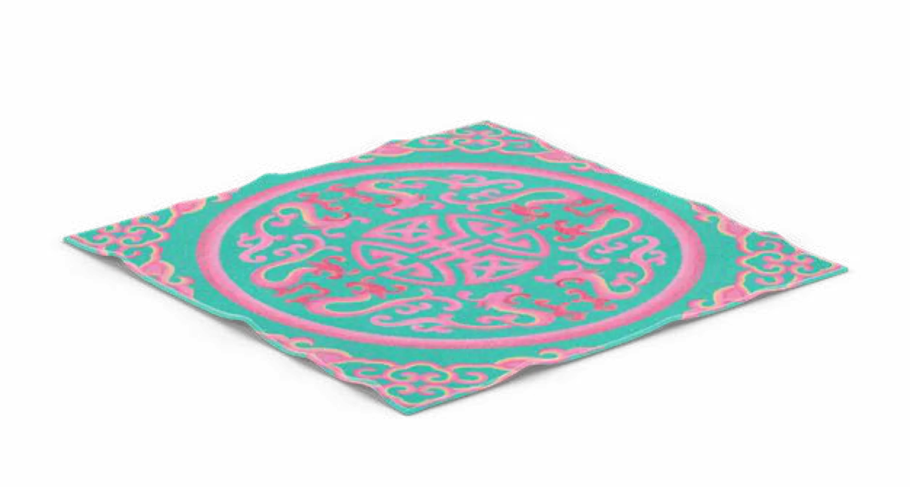

design/styleguide.html — living style guide for styles.css
DESIGNsystem
Every component the site uses, rendered with real work from projects/.
Read design/DESIGN_SYSTEM.md for markup rules. Colour comes from the artwork; the interface stays paper and ink.
01 ColourPaper & ink UI · accents only from artwork · --accent on <body>
Design a collection of three Hermès scarf motifs (20×20 cm each) unified by a common theme, combining storytelling, cultural reference, and artistic refinement in line with Hermès’ design philosophy.
.body--sm .body--justify
I see design as my way of telling stories—stories full of energy, colors, and culture. Growing up in Vietnam, I’ve always been inspired by the richness of Eastern traditions, especially the spirit and heritage of Vietnam that shaped me.
.type-meta · Space Grotesk 300 · 11px
Adobe InDesign, Adobe Photoshop — Editorial Design & Art Direction
.folio · 300 · --folio-size
06 07
.arrow · --left · --bold · --long · --accent
03 Space & grid12 columns ≥ 800px (4 below) · .grid + .cell with --c, --mt
I see design as my way of telling stories—stories full of energy, colors, and culture. Growing up in Vietnam, I’ve always been inspired by the richness of Eastern traditions, especially the spirit and heritage of Vietnam that shaped me, and I love blending that with a contemporary, aesthetic touch.
My design identity is rooted in contrasts: tradition and modernity, playfulness and harmony, vibrancy and depth. Color is my language, cultural richness is my material, and storytelling is the thread that ties everything together.
I focus on creating design that communicates and builds strong brand identities, particularly for Asian-inspired concepts.
06 Issue opener + index entries.issue .display--issue .issue-pill .entryPDF p3
Design a collection of three Hermès scarf motifs (20×20 cm each) unified by a common theme, combining storytelling, cultural reference, and artistic refinement in line with Hermès’ design philosophy.

“CarréVietnamese Folk PatternHermès”Collection

Intention
Titled “Vietnamese Folk Patterns”, this scarf collection reinterprets traditional Vietnamese architectural motifs through a contemporary lens. Each design captures fragments of cultural heritage, rendered with refined lines and rich symbolism.
Create an illustrated poster that tells a small story in a single image, such as a trip, a sports match, or a meal, conveying both the event and its emotions visually.
About Mother Goddess Worship
Đạo Mẫu is a Vietnamese indigenous belief system that honors female deities, focusing on the veneration of the Mother Goddesses of the Three or Four Realms (Heaven, Earth, Water, and Mountains/Forests).
09 Quote on dark.quotePDF p7
Creative Intention
The idea is Đạo Mẫu (Mother Goddess Worship) through a fusion of tradition and pop-style modernity. Inspired by the Hầu Đồng ritual, the illustration captures a spirit medium mid-transformation—surrounded by worshippers, vibrant costumes, and divine energy.
“Tradition helps you understand who you are. It’s beneficial for the next generation to understand tradition in order to develop.”
Design book covers for five traditional Vietnamese stories. The goal is to visually capture the essence and cultural significance of each tale through simple yet impactful illustrations and color schemes.
11 Dark spread · kicker title · cut-out mockups.media--cutoutPDF p11
Vietnamese Folk TraditionFreaky Folklore MonsterTAROT
This project brings Vietnamese folklore into a contemporary visual language, blending bold colors and striking forms to balance beauty with eeriness.
12 Side credit.side-creditPDF p18 · --accent: var(--blue)
“Passport” of an imaginary country
Concept, Visual Identity, Editorial Layout — Group Project · Adobe Lightroom, Adobe Illustrator
PASSPORTProject
Creative Intention
This project involved designing the house style of an imaginary country through its national passport. Our fictional nation, Eunoia – meaning “beautiful thinking” or “good will” – was developed around a poetic and fairytale-inspired concept.
13 Scatter on paper.collage (no rotation)PDF p35 — Cubism portrait